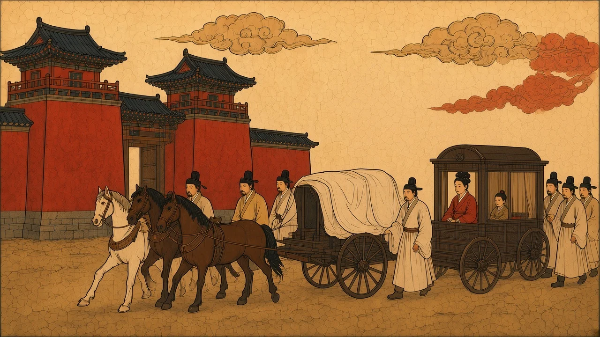
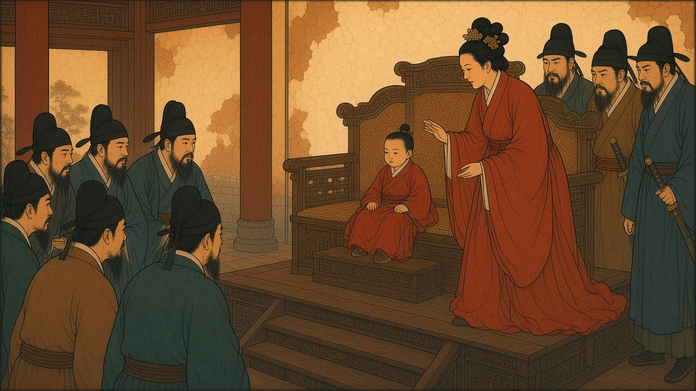
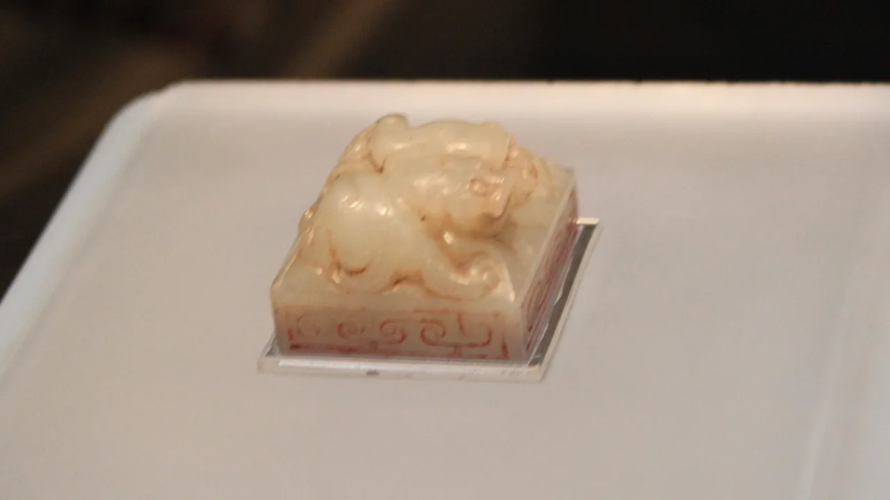
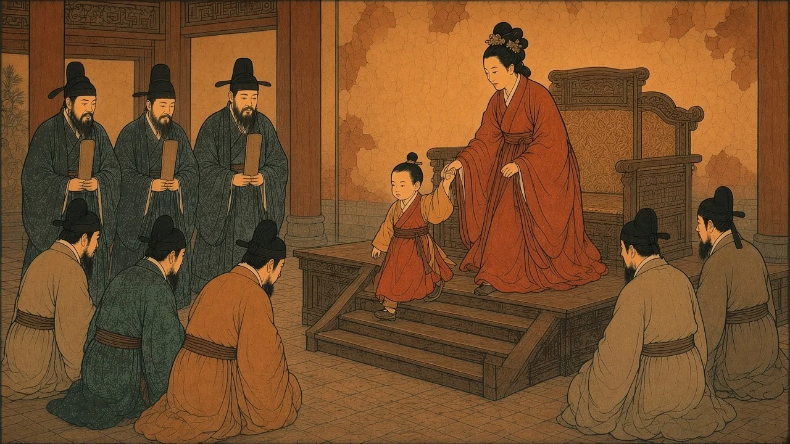
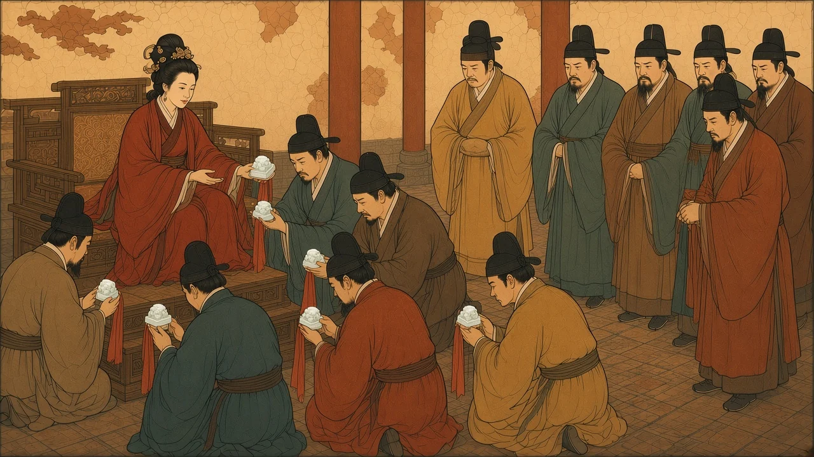
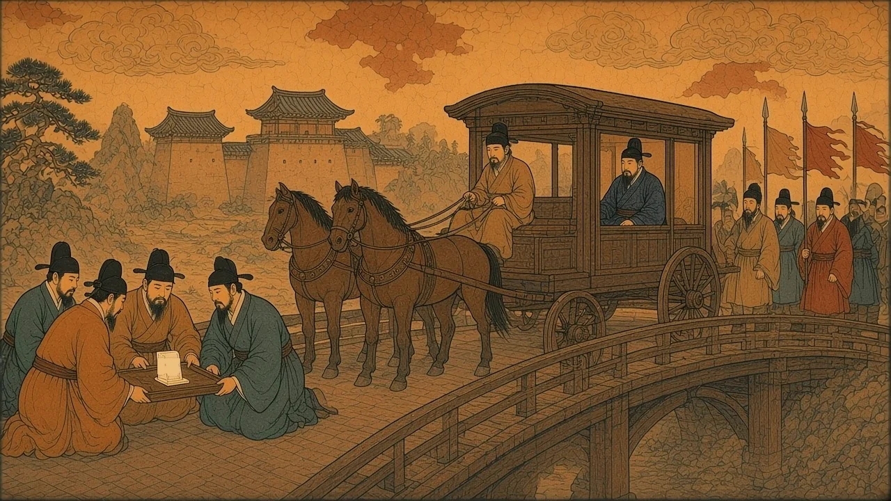
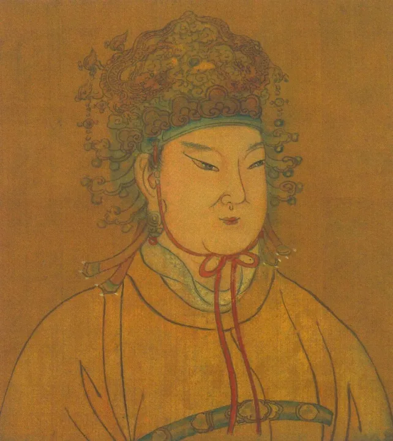
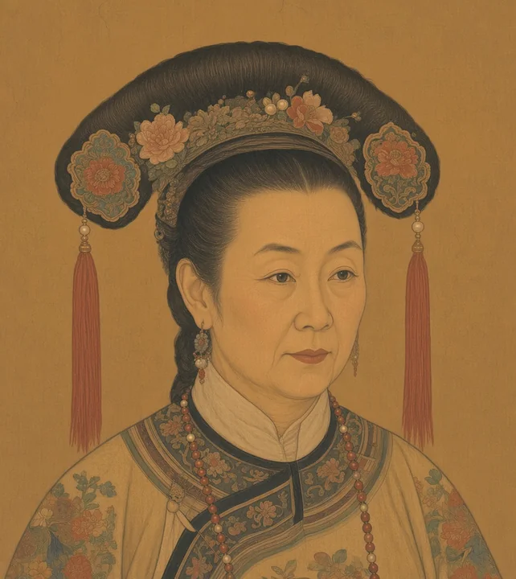
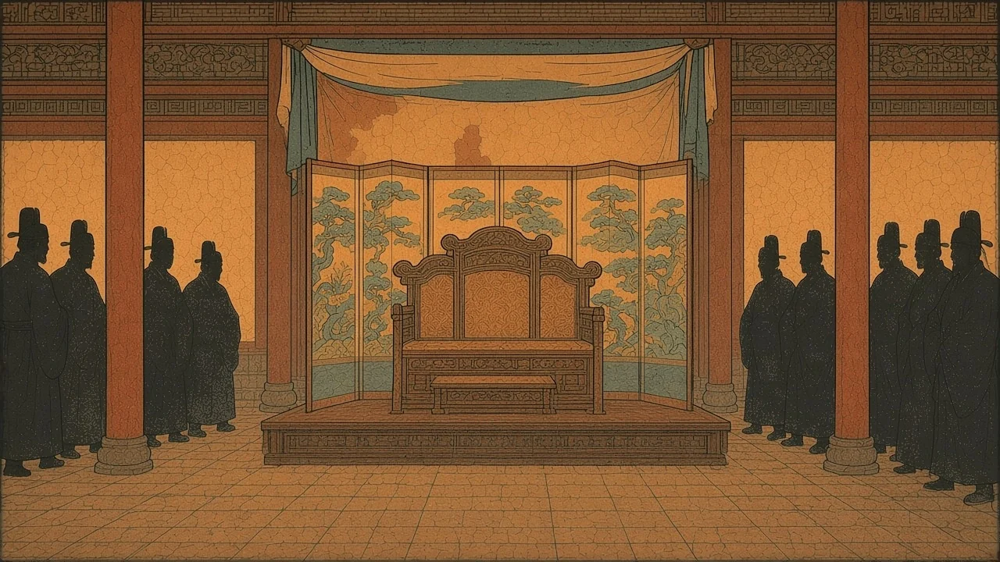

HIST 270 · History of China · Chapter 3 · Mini-Lecture
Empress Lü and the Problem of Regency
Who rules when the emperor cannot? · A Regency at the Founding · A Recurring Imperial Problem Background essay ↗
Empress Lü (Lǚ) stands behind a boy emperor as officials kneel. AI-generated interpretation in Han tomb-mural style, not a historical record.
Start here · How to study this mini-lecture on your own
Two Short Parts, Two Self-Checks, and an Open Study Buddy Button Guide You Through
Click Open Study Buddy (lower right) or press N for each slide's Study Buddy notes.
Work through two parts; each ends with a self-check.
Reading Guide checkpoint: Q3, at the end, linked to Lecture 2.
Click a teal dotted word for a definition.
Arrow keys move; Esc shows a slide map; click any image to enlarge it.
×
Empress dowager
Empress dowager: the widow of a deceased emperor, and usually the mother of the reigning emperor (p. 43). Empress Lü held this title after Emperor Gaozu died in 195 BCE. Popups like this one close with Esc, the × mark, or a click outside the card.
Roadmap · From one regency to a recurring problem
Where We’re Going
Part 1: How did Empress Lü come to dominate the early Han court, 195–180 BCE?
Part 2: How did later dynasties meet versions of the same problem?
Larger question: Who rules when the emperor cannot?

Segment 1 of 2 · Part 1
A Regency at the Founding
How did Empress Lü come to dominate the early Han court? Q3
The funeral of Emperor Gaozu (Gāozǔ), 195 BCE, with his widow and heir following. AI-generated interpretation in Han tomb-mural style, not a historical record.
Q3 concept · Regent · Regency
Concept: A Regent Governs for a Ruler Who Cannot
Regent · Regency
A regent governs in the name of a ruler too young or weak to rule; the regency is the time a regent governs.
A Han emperor at the chalkboard. Course cartoon, AI-generated in the style of Professor Austin’s chalkboard cartoon; not a portrait or historical source.
Part 1 · Q3 story · The larger problem
The Larger Problem
Hereditary monarchy could place a child on the throne.
A child needed a regent. A regent needed allies. Those allies could become a rival center of power.
Empress Lü revealed this vulnerability at the beginning of the Han.

A child on the throne, a regent at his side, and rival groups at court. AI-generated interpretation in Han tomb-mural style, not a historical record.
Part 1 · Q3 story · Chang’an · 195 BCE
195 BCE: Gaozu Dies
His son Liu Ying becomes Emperor Hui.
Hui is young and politically weak.
His mother becomes Empress Dowager Lü.
Lü Zhi quickly becomes the dominant figure at court.
The emperor had the title. His mother increasingly held the power.

Jade seal carved with the words “Seal of the Empress,” Western Han, found in 1968 near the tomb of Emperor Gaozu (Gāozǔ) and often linked to Empress Lü (Lǚ). Shaanxi History Museum, Xi’an. Photo: Gary Todd, 2009, CC0, via Wikimedia Commons.
Part 1 · Q3 story · How regency worked
How Could an Empress Dowager Rule?
Emperor dies → young heir succeeds → mother becomes regent → her relatives enter government
Access
Access to the young emperor meant access to government.
The empress dowager could influence appointments.
Family
Her natal family could gain offices and rewards.
Control of the palace could become control of the state.
Consort family: the relatives of an emperor’s wife or mother.
Part 1 · Q3 story · Three deaths · 195–180 BCE
188 BCE: Hui Dies
195 BCEGaozu dies
188 BCEEmperor Hui dies
180 BCEEmpress Lü dies
Lü remains the central political figure after her son’s death.
Part 1 · Q3 story · Chang’an · 188–180 BCE
After 188 BCE, Lü Ruled Through Young Emperors
Young Liu-family emperors are placed on the throne.
Lü controls court appointments and succession.
Members of the Lü clan receive increasingly important positions.

Empress Lü (Lǚ) places a boy emperor on the throne. AI-generated interpretation in Han tomb-mural style, not a historical record.
Part 1 · Q3 story · The Lü clan rises · 187–180 BCE
When Does a Powerful Family Become a Rival Dynasty?
Gaozu built the dynasty around the Liu imperial family.
Lü Zhi elevated members of her own clan.
Lü relatives received royal titles and major political authority.
The distinction between serving Han and controlling Han became blurred.
If the emperor is a Liu but the court is controlled by the Lü family, who really rules?
The Lü clan came dangerously close to displacing the political dominance of the Liu house.

Empress Lü (Lǚ) gives royal titles to her relatives as Liu (Liú) princes look on. AI-generated interpretation in Han tomb-mural style, not a historical record.
Part 1 · Q3 story · Chang’an · 180 BCE
180 BCE: The Lü Clan Falls
Empress Lü’s personal authority had held the Lü coalition together.
Liu princes and senior officials moved against the Lü clan.
Leading Lü relatives were killed.
Liu Heng became Emperor Wen.
Outcome: the court restored clear control to the Liu imperial family.

Officials offer the seal to Liu Heng (Liú Héng), the future Emperor Wen (Wén), 180 BCE. AI-generated interpretation in Han tomb-mural style, not a historical record.
Part 1 · Q3 analysis · A built-in weakness
This Was Bigger Than Empress Lü
Hereditary monarchy → child or weak emperor → empress dowager becomes regent → her natal family gains power → rival court factions emerge
Adult imperial relatives could threaten the throne. Removing them from court created space for other factions, including empress families and later eunuchs.
The dynasty needed regents, but every regent created the possibility of a rival center of power.
Self-check · Part 1 · not graded
Check Yourself: A Regency at the Founding
Answer each question from memory, out loud or on paper, then click Show answer. Nothing here is graded or recorded.
1. What is an empress dowager?
The widow of a deceased emperor, usually the mother of the reigning emperor (p. 43).
2. Who became emperor in 195 BCE, and who held the power?
Gaozu’s son Liu Ying, as Emperor Hui; his mother, Empress Dowager Lü, increasingly held the power (p. 43).
3. What is a consort family?
The relatives of an emperor’s wife or mother (p. 55).
4. How did Lü keep power after Emperor Hui died in 188 BCE?
Young Liu-family emperors were placed on the throne; she controlled appointments and succession; her clan received important positions.
5. What happened in 180 BCE?
Empress Lü died; Liu princes and senior officials moved against the Lü clan; Liu Heng became Emperor Wen (p. 43).
Later dynasties managed versions of the same succession vulnerability.
The same court scene repeats across the centuries. AI-generated interpretation in Han tomb-mural style, not a historical record.
Part 2 · Comparison · Tang dynasty · 690 CE
Wu Zetian: From Empress to Emperor
Tang Dynasty: rose from imperial consort to empress.
Exercised power during Gaozong’s illness and controlled succession after his death.
In 690, declared herself emperor of a new Zhou dynasty.
China’s only woman to rule formally with the title of emperor.
Empress Lü approached dynastic displacement. Wu Zetian crossed the line.

Wu Zetian (Wǔ Zétiān), an imagined portrait painted many centuries after her death, Qing dynasty; not a likeness from her lifetime. Public domain, via Wikimedia Commons. Consort → Empress → Regent → Emperor.
Part 2 · Comparison · Qing dynasty · 1861
Cixi (Cíxǐ): A Regent Behind the Screen
Qing Dynasty: rose from a consort of the Xianfeng emperor to empress dowager.
After Xianfeng died in 1861, she became regent for her young son, the Tongzhi emperor.
When Tongzhi died in 1875, she served as regent again, this time for the child Guangxu emperor.
She dominated the court by ruling from behind the screen, without taking the title of emperor.
Wu Zetian crossed the line and became emperor. Cixi stayed a regent and ruled through the succession.

Cixi (Cíxǐ), an AI-generated imagined portrait in the style of a later painted album; not a photograph and not a likeness from her lifetime. Consort → Empress dowager → Regent.
Part 2 · Comparison · Han, Tang, Qing
Three Forms of Female Power
Empress Lü
Han Empress dowager + regency + natal clan Lü clan nearly displaced Liu dominance
Wu Zetian
Tang Consort → empress → regent Took the throne as emperor
Cixi: in the nineteenth century, she remained the most powerful figure at court by ruling through young emperors, including the four-year-old Guangxu emperor.
Part 2 · Q3 analysis · The lesson
The Problem Was Succession, Not Simply Gender
Hereditary monarchy could place a child on the throne.
A child needed a regent. A regent needed allies. Those allies could become a rival center of power.
Empress Lü revealed this problem at the beginning of the Han. Chinese dynasties would confront versions of it for the next two thousand years.
How can a monarchy protect a child emperor without giving someone else enough power to replace him?

An empty throne: who fills it when the emperor cannot? AI-generated interpretation in Han tomb-mural style, not a historical record.
Self-check · Part 2 · not graded
Check Yourself: A Recurring Imperial Problem
Answer each question from memory, out loud or on paper, then click Show answer. Nothing here is graded or recorded.
1. What did Wu Zetian do in 690?
She declared herself emperor of a new Zhou dynasty, the only woman to rule formally with the title of emperor.
2. How did Cixi dominate the Qing court?
As empress dowager, by ruling through young emperors in repeated regencies, without becoming emperor.
3. How does Empress Lü differ from Wu Zetian?
Lü approached dynastic displacement; her clan nearly displaced the Liu. Wu Zetian crossed the line and took the throne.
4. Why does the mini-lecture call the problem “succession, not simply gender”?
Because any child emperor needed a regent, and any regent, man or woman, needed allies who could become a rival center of power (pp. 43–44).
Contrast the founding of the Han Dynasty by Liu Bang (Emperor Gao) with the rule of the preceding Qin Dynasty. In what ways did the early Han administration simultaneously adopt and modify Qin political structures?
Patricia Buckley Ebrey, A History of China, Chapter 3, “The Founding of the Bureaucratic Empire: Qin-Han China (256 B.C.E.–200 C.E.),” pp. 42–45, 55 (“The Han Dynasty,” “Wang Mang,” “Palace Eunuchs,” and “Summary”).
Primary source behind the story
Sima Qian, Records of the Grand Historian (Shiji), chapters 9 (Annals of Empress Lü) and 10 (Annals of Emperor Wen).
Later comparisons
Wu Zetian and Empress Dowager Cixi: standard references; both appear in later chapters of the textbook.
Images
Jade “Seal of the Empress,” Shaanxi History Museum: photo by Gary Todd, CC0, via Wikimedia Commons. Wu Zetian portrait, Qing dynasty: public domain, via Wikimedia Commons. The concept slide uses a course cartoon of a Han emperor, AI-generated in the style of Professor Austin’s chalkboard cartoon. The Cixi portrait is an AI-generated imagined painting in the style of the Wu Zetian album portrait; not a photograph and not a likeness from life. All other images are AI-generated interpretations in the Chapter 3 Han tomb-mural style; not primary-source evidence. Each caption says so.